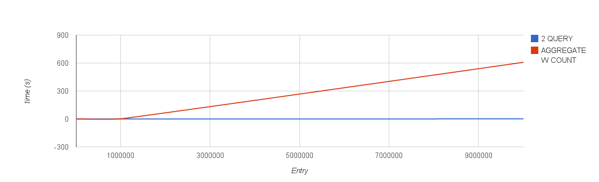

Aggregation¶
Abstract¶
Nel seguente documento si riportano i risultati delle analisi, simulazioni e benchmarking delle query di aggregazione fornite e dei tweaking proposti
Introduzione¶
Il comando explain utilizzato sulle operazioni di aggregazione non fornisce un dato sul tempo di esecuzione della query, per questo si è scelto di utilizzare il profiler di mongodb per calcolare i tempi di esecuzione. Purtroppo il profiler non è supportato per mongos, quindi, per effettuare dei benchmark e dei confronti nell’ambiente di test è stato utilizzato un tool esterno che va a leggere dai profiler dei singoli nodi. (https://github.com/ajdavis/cluster-profile)
Risposte a dubbi ed analisi aggregazione¶
- Per quanto riguarda il dubbio sull’ ordine delle operazioni in pipeline: Un sort sul time prima della group avrà il benificio di usare gli indici per cui avrebbe molto senso farlo, se fatta dopo la group non utilizzerà gli indici per cui sarà sicuramente più lenta.
- Per quanto riguarda la possibilità di inserire la sort prima di una group all’interno di una pipeline: Il funzionamento della group di mongodb non è in realtà un’effettivo raggruppamento nel senso classico, ma il comportamento dipende dalla funzione associata. Quindi non beneficia particolarmente dall’adiacenza degli elementi simili. In ogni caso l’output della group non è stabile, quindi non mantiene eventuali ordinamenti precedentemente fatti.
- Per quanto riguarda l’efficienza di fare 2 query count + aggregate per paginare una aggregazione (avendo quindi il count totale dei risultati) sono state fatte varie prove visibili nella sezione Paginazione in Aggregation VS 2 Query.
- Per quanto riguarda l’efficienza di effettuare il raggruppamento usando aggregate e poi sortare e limitare applicativamente si può fare riferimento alla sezione Paginazione con $group.
Paginazione in Aggregation VS 2 Query¶
La soluzione che permetterebbe di unificare il processo di conteggio con quello di ritorno dei risultati sarebbe quella basata sull’aggregation framework.
Sfruttando $group è possibile contare i risultati totali e poi limitarli:
db.measures.find({'idDataset' : 2, 'datasetVersion' : 1, 'time': {'$lt': ISODate("2014-10-02T14:00:00Z")}}).count()
db.measures.find({'idDataset' : 2, 'datasetVersion' : 1, 'time': {'$lt': ISODate("2014-10-02T14:00:00Z")}}).limit(10)
VS:
db.measures.aggregate([
{'$match': {'idDataset' : 2, 'datasetVersion' : 1, 'time': {'$lt': ISODate("2014-10-02T14:00:00Z")}}},
{'$group': {'_id': 'results', 'total': {'$sum': 1}, 'results': {'$push': '$$CURRENT'}}},
{'$unwind': '$results'},
{'$limit': 10}
])
Tuttavia come si può vedere al grafico questa soluzione è sicuramente più inefficiente:
Questo è dovuto al fatto che MongoDB può effettuare le operazioni di count sfruttando i contatori scritti direttamente nei BTree degli indici. Quindi se la query include un indice è molto veloce effettuarne l’operazione di conteggio.
In ogni caso, anche se la query non fosse indicizzata, per portare dietro il set di risultati e poi poterlo limitare è necessario ricorrere alla chiamata $push che effettuando l’inserimento in un array dinamico in memoria richiede la riallocazione dell’array per gli inserimenti.
Paginazione con $group¶
Al momento l’applicazione esegue lato MongoDB solo la $group, poi sul risultato viene effettuato ordinamento, conteggio e limit lato applicativo.
Note
Non è chiaro perché l’ordinamento avvenga lato applicativo, esso potrebbe essere introdotto nella pipeline di aggregazione con $sort in modo da lasciare lato applicativo solo il conteggio e limit.
Sfruttando lo stesso procedimento precedente, è possibile unificare in una sola query il conteggio, raggruppamento e limite.
La query:
db.measures.aggregate([
{'$group': {'_id': '$value', count: {'$sum': 1}}}
])
che successivamente ordinerebbe, conterebbe e limiterebbe lato applicativo può essere facilmente estesa per effettuare l’ordinamento nella pipeline di aggregazione direttamente:
db.measures.aggregate([
{'$group': {'_id': '$value', count: {'$sum': 1}}}, # Questo è l'effettivo raggruppamento
{'$sort': {'_id': 1}}, # Ordina i risultati lato MongoDB invece di farlo applicativamente
])
Inoltre si può sperimentare nuovamente di effettuare l’operazione di conteggio e limit direttamente lato aggragazione:
db.measures.aggregate([
{'$group': {'_id': '$value', count: {'$sum': 1}}}, # Questo è l'effettivo raggruppamento
{'$sort': {'_id': 1}}, # Ordina i risultati lato MongoDB invece di farlo applicativamente
{'$group': {'_id': null, 'results': {'$push': '$$CURRENT'}, 'total': {'$sum': 1}}},
{'$unwind': '$results'},
{'$limit': 10}
])
In questo caso possiamo tenere alcune considerazioni:
- Al fine di inviare i risultati nel lato applicativo il cursore dovrà essere srotolato e quindi il costo è lineare al numero di risultati, uguale all’operazione lato server di $group.
- Al fine di ricostruire il set dei dati ricevuti lato applicativo i dati dovranno essere inseriti uno ad uno in un contenitore dal driver mongodb, nuovamente una operazione di complessità lineare al pari della $unwind.
- Il costo della $push nella group potrebbe essere equivalente al costo dell’inserimento dei risultati nell’array che li conterrà lato applicativo, quindi dipendentemente dal container usato lato applicativo potrebbe risultare parimenti veloce.
- Nel caso in cui il set di risultati venga interamente passato all’applicazione c’è da considerare il costo di trasmissione. Questo è notevolmente ridotto nel caso dell’aggregazione in cui invece sono passati solo i 10 risultati già limitati.
Di seguito il risultato dei benchmark nei tre casi:
- Sort + Count + Limit applicativi (simulati con script python)
- Count + Limit applicativi (simulati con script python)
- Solo pipeline

Dal grafico si evince in modo interessante che al crescere dei gruppi, il costro di trasferimento e del driver mongodb supera sensibilmente il guadagno ottenuto dall’eliminazione dei processi di $group, $push e $unwind. Quindi ne caso in cui ci siano centinaia di migliaia di gruppi diversi la soluzione intermanete in pipeline risulta più efficiente.
Nei casi con bassi numero di gruppi invece la soluzione che effettua le operazioni in app è più efficiente, ma la differenza non sembra così rilevante (uno scarto dell’1%).
Best Practices¶
Il processo di aggregazione avviene in parte all’ interno del nodo contenente i dati e in parte dal nodo principale (se si utilizza almeno mongodb 2.6, altrimenti dal mongos).
Mongodb in automatico cerca di ordinare le operazioni all’ interno della pipeline in modo da utilizzare gli indici e da renderle il più ottimizzate possibile, in ogni caso quando si scrive la pipeline di esecuzione è sempre meglio tenere in considerazione alcuni accorgimenti:
- Nella pipeline di aggregazione mettere sempre al primo posto match di campi indicizzati (idDataset, datasetVersion, time) in modo che sia toccato solo il nodo contenente effettivamente i dati.
- Immediatamente dopo è bene inserire sort su campi indicizzati(idDataset, datasetVersion, time)
- Una volta fatti match e sort indicizzati vanno fatti gli altri match e gli altri sort
- In ogni caso le operazioni di sort e group vengono eseguite direttamente nei vari nodi impattati, successivamente vengono inviati i risultati al nodo principale (o al mongos in caso di versione < 2.6) per essere mergiati e procedere la pipeline, per questo è sempre meglio metterle in cima alla pipeline di esecuzione
- Se ho eseguito un sort e poi necessito di fare min o max sul campo è sempre meglio utilizzare first e last, se invece non sorto min e max sono migliori di sort + first o last
Opzioni¶
Di seguito sono riportate le opzioni che più comunemente influenzano l’aggregation framework. Esse possono essere passate direttamente alla chiamata .aggregate per cambiarne il comportamento:
- allowDiskUse: Nel caso in cui le operazioni in pipeline siano molto pesanti o processimo molti dati potrebbe essere necessario abilitare questa opzione in quanto il massimo di RAM utilizzata per le pipeline di aggragazione è di 100MB, questo permette di utilizzare il disco e superare questo limite.
- cursor: cursor: { batchSize: 0 } significa che il il primo batch sarà vuoto e tornerà un cursore con all’ interno l’errore se presente, con questa pratica si può verificare la presenza di errori senza caricare il server di lavoro.